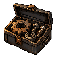
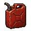
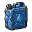
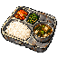

사건 화면 · 부분 초안
물자 변화가 먼저 보이게
물자 이름 옆에 배경 없는 작은 그림을 붙였습니다. 획득·소모 모두 같은 그림을 쓰고, 수량의 + / −로 구분합니다.
난방이 끊긴 가족 버스
새 연결부를 조여 넣자 미지근한 바람이 돌아왔다. 유나의 굳었던 손이 조금 펴졌다.

소모부품- −1개
남겨 둔 기록
새 부품을 써서 유나가 탄 이송 버스의 난방을 빠르게 되살렸다. 도윤의 표에는 이송 사유가 없었다.
난방이 끊긴 가족 버스
새 부품으로 잇거나, 연결 고리를 깎거나, 남은 호스를 당겨 물려야 했다.
어떻게 고칠까?
밀양의 부품 천막 · 본문 일부
나사산이 살아 있는 볼트, 금이 간 베어링, 아직 쓸 수 있는 호스가 차례로 갈린다. 일꾼은 가장 멀쩡한 체결 부품을 달구지 몫으로 밀어 놓는다.
- 획득부품
- +1개
피로 +3
남겨 둔 기록
경운기와 자전거 부품을 함께 분류하고 달구지에 맞는 체결 부품 하나를 품삯으로 받았다.
다른 물자 · 가상 수치로 보는 표시 예시
그림은 가방에서 보던 물자와 같습니다. 현재 사건의 보상이나 소모를 뜻하지 않습니다.
- 획득고철
- +3

소모연료- −2L

획득물- +2L

획득식량- +1
난방이 끊긴 가족 버스
찢어진 구간을 잘라 내고 남은 호스를 당겨 물렸다. 몇 번이나 새는 곳을 다시 조였다. 도윤이 송풍구에 손을 대더니 하진을 돌아봤다. 따뜻한 바람이 나오고 있었다.
남겨 둔 기록
물자를 쓰지 않고 호스를 우회해 유나가 탄 버스의 난방을 살렸다. 도윤의 표에는 이송 사유가 없었다.
새 연결부를 조여 넣자 미지근한 바람이 돌아왔다. 유나의 굳었던 손이 조금 펴졌다.
- 소모부품
- −1개
철판을 말아 연결 고리를 조였다. 바람이 나오자 하진이 유나를 송풍구 쪽으로 고쳐 안았다. 다음 정차지에서 고리를 다시 봐 달라고 부탁했다.
- 소모고철
- −3
찢어진 구간을 잘라 내고 남은 호스를 당겨 물렸다. 몇 번이나 새는 곳을 다시 조였다. 도윤이 송풍구에 손을 대더니 하진을 돌아봤다. 따뜻한 바람이 나오고 있었다.
선택 전으로 돌아가기초안에서 다음 행동까지 확인했습니다.
게임에서는 원래 이어지던 사건이나 장소로 돌아갑니다.
결과 초안으로 돌아가기